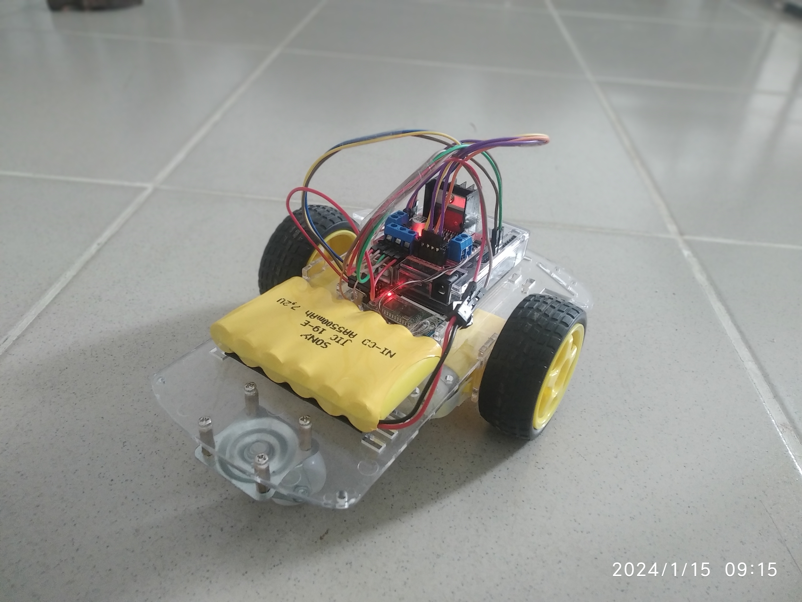
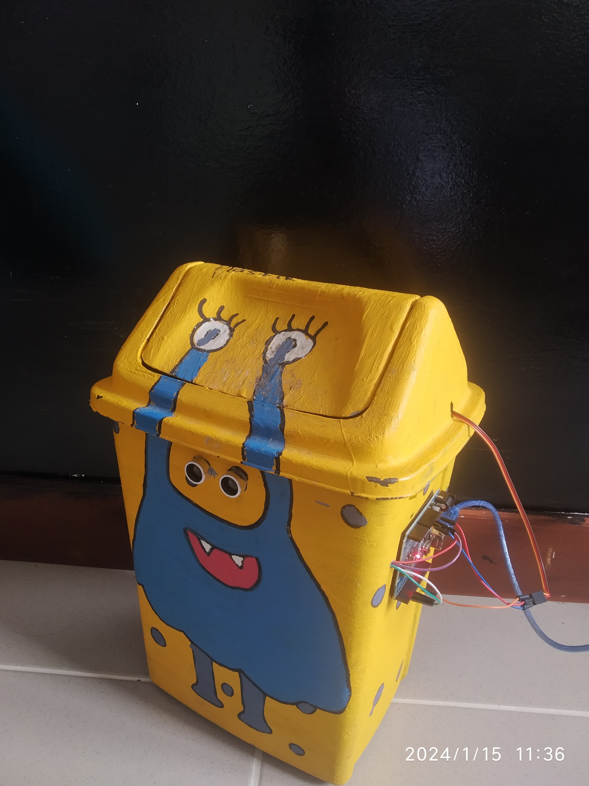
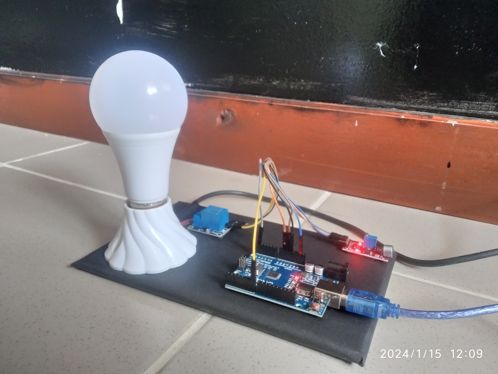

Proyek Saya

Proyek 1: Deskripsi singkat

Proyek 2: Deskripsi singkat

Proyek 3: Deskripsi singkat

Proyek 4: Deskripsi singkat
Saya, Sandy Yolanda, adalah seorang kreator yang menggabungkan kemampuan analitis, teknologi, dan desain. Saya berpengalaman dalam robotik, desain grafis, dan pengembangan web. Selain itu, saya mampu memecahkan masalah dan mengatasi berbagai permasalahan IT untuk menghasilkan solusi yang inovatif dan adaptif.
Proyek 1: Deskripsi singkat
Proyek 2: Deskripsi singkat
Proyek 3: Deskripsi singkat
Proyek 4: Deskripsi singkat
Email: sandy210620@gmail.com
Sosial Media: